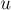
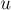

MAXimal
добавлено: 2 Mar 2009 17:45
редактировано: 2 Mar 2009 17:45
Содержание [скрыть]
Наименьший общий предок. Нахождение за в оффлайн (алгоритм Тарьяна)
Дано дерево  с
с  вершинами и дано
вершинами и дано  запросов вида . Для каждого запроса требуется найти наименьшего общего предка вершин
запросов вида . Для каждого запроса требуется найти наименьшего общего предка вершин  и
и  , т.е. такую вершину , которая наиболее удалена от корня дерева, и при этом является предком обеих вершин и .
, т.е. такую вершину , которая наиболее удалена от корня дерева, и при этом является предком обеих вершин и .
Мы рассматриваем задачу в режиме оффлайн, т.е. считая, что все запросы известны заранее. Описываемый ниже алгоритм позволяет ответить на все запросов за суммарное время  , т.е. при достаточно большом за
, т.е. при достаточно большом за  на запрос.
на запрос.
Алгоритм Тарьяна
Основой для алгоритма является структура данных "Система непересекающихся множеств", которая и была изобретена Тарьяном (Tarjan).
Алгоритм фактически представляет собой обход в глубину из корня дерева, в процессе которого постепенно находятся ответы на запросы. А именно, ответ на запрос  находится, когда обход в глубину находится в вершине , а вершина
находится, когда обход в глубину находится в вершине , а вершина  уже была посещена, или наоборот.
уже была посещена, или наоборот.
Итак, пусть обход в глубину находится в вершине (и уже были выполнены переходы в её сыновей), и оказалось, что для какого-то запроса вершина уже была посещена обходом в глубину. Научимся тогда находить этих двух вершин.
Заметим, что является либо самой вершиной , либо одним из её предков. Получается, нам надо найти самую нижнюю вершину среди предков (включая её саму), для которой вершина является потомком. Заметим, что при фиксированном по такому признаку (т.е. какой наименьший предок является и предком какой-то вершины) вершины дерева дерева распадаются на совокупность непересекающихся классов. Для каждого предка вершины её класс содержит саму эту вершину, а также все поддеревья с корнями в тех её сыновьях, которые лежат "слева" от пути до (т.е. которые были обработаны ранее, чем была достигнута ).
Нам надо научиться эффективно поддерживать все эти классы, для чего мы и применим структуру данных "Система непересекающихся множеств". Каждому классу будет соответствовать в этой структуре множество, причём для представителя этого множества мы определим величину — ту вершину  , которая и образует этот класс.
, которая и образует этот класс.
Рассмотрим подробно реализацию обхода в глубину. Пусть мы стоим в некоторой вершине . Поместим её в отдельный класс в структуре непересекающихся множеств, . Как обычно в обходе в глубину, перебираем все исходящие рёбра  . Для каждого такого
. Для каждого такого  мы сначала должны вызвать обход в глубину из этой вершины, а потом добавить эту вершину со всем её поддеревом в класс вершины . Это реализуется операцией структуры данных "система непересекающихся множеств", с последующей установкой для представителя множества (т.к. после объединения представитель класса мог измениться). Наконец, после обработки всех рёбер мы перебираем все запросы вида , и если была помечена как посещённая обходом в глубину, то ответом на этот запрос будет вершина . Нетрудно заметить, что для каждого запроса это условие (что одна вершина запроса является текущей, а другая была посещена ранее) выполнится ровно один раз.
мы сначала должны вызвать обход в глубину из этой вершины, а потом добавить эту вершину со всем её поддеревом в класс вершины . Это реализуется операцией структуры данных "система непересекающихся множеств", с последующей установкой для представителя множества (т.к. после объединения представитель класса мог измениться). Наконец, после обработки всех рёбер мы перебираем все запросы вида , и если была помечена как посещённая обходом в глубину, то ответом на этот запрос будет вершина . Нетрудно заметить, что для каждого запроса это условие (что одна вершина запроса является текущей, а другая была посещена ранее) выполнится ровно один раз.
Оценим асимптотику. Она складывается из нескольких частей. Во-первых, это асимптотика обхода в глубину, которая в данном случае составляет  . Во-вторых, это операции по объединению множеств, которые в сумме для всех разумных затрачивают операций. В-третьих, это для каждого запроса проверка условия (два раза на запрос) и определение результата (один раз на запрос), каждое, опять же, для всех разумных выполняется за . Итоговая асимптотика получается , что означает для достаточно больших () ответ за на один запрос.
. Во-вторых, это операции по объединению множеств, которые в сумме для всех разумных затрачивают операций. В-третьих, это для каждого запроса проверка условия (два раза на запрос) и определение результата (один раз на запрос), каждое, опять же, для всех разумных выполняется за . Итоговая асимптотика получается , что означает для достаточно больших () ответ за на один запрос.
Реализация
Приведём полную реализацию данного алгоритма, включая слегка изменённую (с поддержкой ) реализацию системы пересекающихся множеств (рандомизированный варианта).
const int MAXN = максимальное число вершин в графе; vector<int> g[MAXN], q[MAXN]; // граф и все запросы int dsu[MAXN], ancestor[MAXN]; bool u[MAXN]; int dsu_get (int v) { return v == dsu[v] ? v : dsu[v] = dsu_get (dsu[v]); } void dsu_unite (int a, int b, int new_ancestor) { a = dsu_get (a), b = dsu_get (b); if (rand() & 1) swap (a, b); dsu[a] = b, ancestor[b] = new_ancestor; } void dfs (int v) { dsu[v] = v, ancestor[v] = v; u[v] = true; for (size_t i=0; i<g[v].size(); ++i) if (!u[g[v][i]]) { dfs (g[v][i]); dsu_unite (v, g[v][i], v); } for (size_t i=0; i<q[v].size(); ++i) if (u[q[v][i]]) { printf ("%d %d -> %d\n", v+1, q[v][i]+1, ancestor[ dsu_get(q[v][i]) ]+1); } int main() { ... чтение графа ... // чтение запросов for (;;) { int a, b = ...; // очередной запрос --a, --b; q[a].push_back (b); q[b].push_back (a); } // обход в глубину и ответ на запросы dfs (0); }